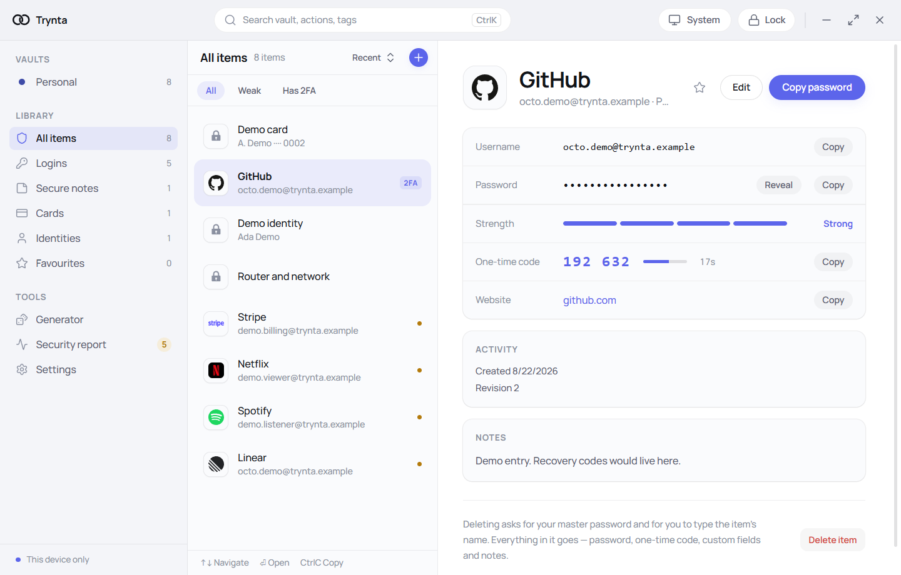

A local-first, end-to-end encrypted password manager for the desktop. Your vault is one file on your own disk, and the key that opens it is derived on your machine and kept nowhere else — not on a server, because there isn't one.
Pre-1.0. No third-party security audit yet. Windows only. Don’t put credentials you rely on in it.

Ten properties, each naming the file to read if you would rather check than take our word for it. Four of them say none, unsigned or Windows only. Those are the ones worth opening first.
Version . Every artefact is built by the release workflow from a tagged commit, and the SHA-256 of each is listed on the release page.
All releases — older versions, the full notes, and source archives.
The installer is unsigned, so SmartScreen shows a blue dialog reading Windows protected your PC with the publisher listed as Unknown publisher. Getting past it takes More info → Run anyway.
That warning is accurate and you should not wave it away on our say-so. Run Get-FileHash over what you downloaded and compare it with the SHA-256 on the release page — the button above hands you the file without taking you past them. A certificate is on the list, behind things that matter more.
Logins, secure notes, cards and identities in an encrypted local file. A generator with a real entropy figure, one-time codes, a report that finds weak, reused and breached passwords, encrypted backups under their own passphrase, and unlock with Windows Hello. This is what you can download today.
Two people co-owning one login through a mutually confirmed invite: both see it, both can use it, both can edit it, and neither depends on the other staying online. Item keys wrapped to each owner’s public key, so nothing in the middle ever holds plaintext. The keypair is generated and reserved. None of the rest is written.
Within it · device-to-device transfer. Moving a vault to a second machine means exporting an encrypted backup and getting the file across yourself, and the file being signed doesn’t make a cloud folder a good place to leave it. The same key exchange that lets two people co-own a credential is what lets you hand a vault to your own second laptop with nothing in the middle.
Optional end-to-end encrypted sync through a relay you can run yourself, and browser autofill that matches on the registrable domain rather than a substring. Both depend on the V2 key exchange existing first, so neither has a shape yet.
No dates. This is worked on in evenings, and a date would be a guess dressed up as a commitment.